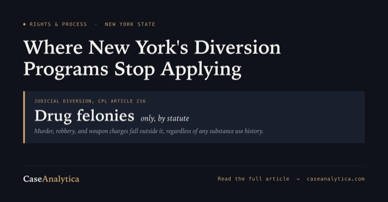
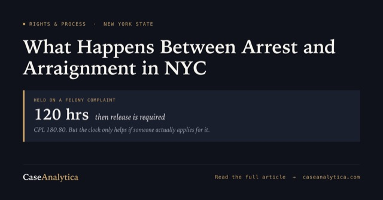
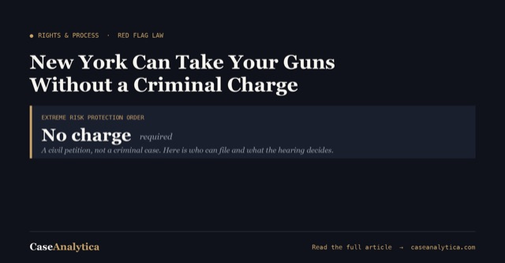
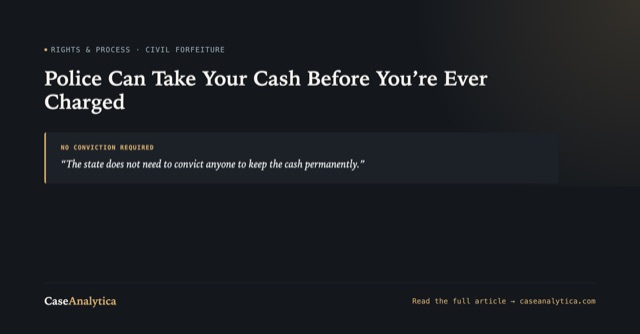
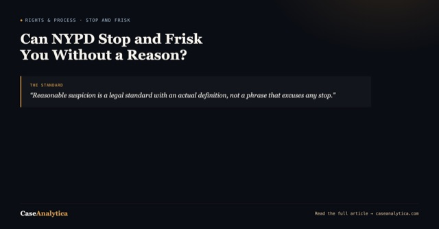
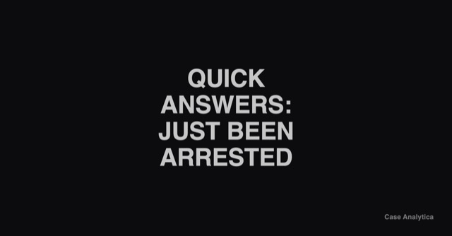
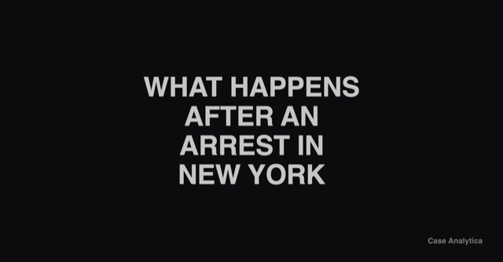

Arrest and the first 24 hours
Everything that happens in this window happens fast, to people who have never seen it before, and most of it is decided before anyone explains anything. New York generally has to bring someone before a judge within 24 hours. What gets asked, and not asked, in that window shapes everything after it.
A Queens Car Meetup Ended in a Ring of Fire. One Driver Now Faces Up to Seven Years
A Maspeth car meetup that ended with a ring of fire and a cracked patrol windshield left one driver facing six charges, up to seven years in prison, and no cash bail. Here's what New York's riot and unlawful assembly laws actually require.

What Happens After a Murder Arrest in New York: The Jesus Acosta Case and the Limits of Diversion
Jesus Acosta's arrest and arraignment on murder charges in the Bronx and Brooklyn shows how central booking, arraignment, bail, and parole holds actually work, and why New York's diversion programs don't reach a case like this one.

What Happens After an Arrest in NYC: A Queens Chain-Snatching Case Shows the Timeline From Custody to Arraignment
A Queens chain-snatching case involving a 16-year-old shows how booking, arraignment, bail, and diversion actually work after an NYC arrest, and where Raise the Age changes the sequence.

New York Can Take Your Guns Without a Criminal Charge: The Red Flag Law Explained
New York's red flag law lets a court order guns removed through a civil case, not a criminal one, often before the person involved has spoken to a lawyer. Here's what CPLR Article 63-A actually allows.

Police Can Take Your Cash Before You're Ever Charged: Civil Asset Forfeiture Under CPLR Article 13-A
New York can seize your cash, your car, or your house without a conviction, sometimes without an arrest. Here's what CPLR Article 13-A actually allows, and the exact question to ask if it happens to you.

Can NYPD Stop and Frisk You Without a Reason? CPL 140.50 and Floyd v. City of New York
Reasonable suspicion is a legal standard with an actual definition, not a phrase that excuses any stop. Here's what CPL 140.50 authorizes, what Floyd v. City of New York found NYPD was doing instead, and what to say during a stop.
What Is Project Reset in New York? How a Desk Appearance Ticket Can Avoid a Criminal Record
Project Reset lets people arrested in New York City for a low-level misdemeanor avoid prosecution entirely, but only if the person holding the Desk Appearance Ticket finds out about it before the court date. Here's how it actually works, and the exact question to ask.

Quick Answers: Just Been Arrested in New York (FAQ)
Direct answers to the questions people actually search in the first hours after an arrest, each linked to the full explanation.
You've Just Been Arrested in New York: What You're Actually Facing, and the Question That Changes Everything
What the first hours and days after an arrest actually look like, and the one question about restorative justice that has to be asked before a plea, not after.

What Actually Happens After an Arrest in New York State
From the moment of arrest to arraignment, discovery, and sentencing: the full process explained in plain language, so you're not learning these terms for the first time in a courtroom hallway.